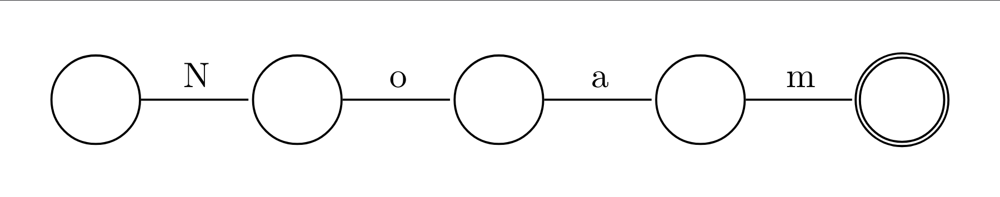
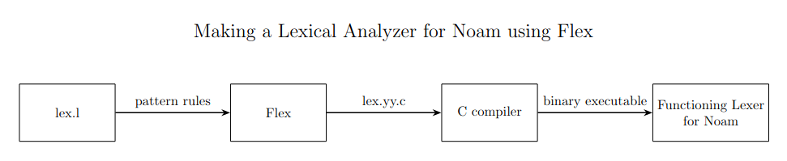
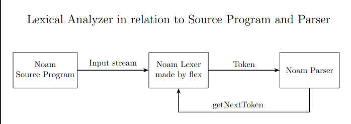

Noam, Automate Formal Verification Language
Anouncement!!!
I finally decided on a name for my Automoata Verification language. I’ve decided to call it Noam, after one of the great minds of our generation ( even the prevoius generation too !) Noam Chomsky. For now I’ll focus on the sub-problem of verifying Finite Automate, and hopefully adjust to better capture more automatas.

I feel like I should say this, Noam is just a personal project meant to help me learn about [programming] languages, formal verification and compilers. In this blog post we’ll explore Lexical Analyzers, and implement two lexers for Noam, the first one will be in flex, since it is more standard and will help us get an Idea of how a finished lexer would look like, The second one will be in Common lisp’s cl-lex. this will be the final lexer for Noam.
This seems to be easier to do in lisp, since the parsing is going to be done by either cl-yacc or Common Lisps LALR parser generator, The lexer is basically a function in both parser generators so no matter if it is implemented using a set of predefined macros, or just a function.
Any of them will do. However the commonlisp one will be used as the default one for Noam.
I have decided to implement the Noam language in Common Lisp. I think that lisp, with it’s symbolic computation and meta-programming is a good choice for most of the lexical/syntactic/semantic analysis. The lexing/parsing is pretty much the same in all implementation choices, How ever because of Lisp’s tendency for great Abstract Syntax Tree generation. Since Lisp’s source code is basically an AST and macros allow the programmer to expand structures within lisp. for now we will go with the default text-book approach of compiler development. But who knows, maybe in the future we’ll change the way we approach it, and do a complete reboot.
Also probably a great choice when someday I decide to have type checking and interactice environment for Noam.
Lexer
Lexical Analysis is the phase within compiler design that aims to look at the source program through lexical patterns only. What does that mean? Basically given a stream of input characters, we will try and guess what each lexeme represents in our source program. A lexeme is a set of characters, that have a specific meaning in our program. We are trying to tokenize our input stream into meaningful bits, in the context of our language. Finding the lexemes by themselves is not so useful though, we’ll have to determine what kind of lexemes they are, this will be useful for the parser.
Take this python program for example. This could be a sample output of lexer as it reads it:
xs = map(\lambda x:x**2, [1,2])
xs -> lexeme <-> IDENTIFIER
= -> lexeme <-> ASSIGNMENT_OPERATOR
map -> lexeme <-> MAP_FUNCTION
( -> lexeme <-> LEFT_PARENTHESIS
\lambda -> lexeme <-> LAMBDA_DECLARATION
x -> lexeme <-> IDENTIFIER
: -> lexeme <-> COLON
x -> lexeme <-> IDENTIFIER
** -> lexeme <-> POWER_OPERATOR
2 -> lexeme <-> INTEGER_LITERAL
, -> lexeme <-> COMMA
[ -> lexeme <-> LEFT_BRACKET
1 -> lexeme <-> INTEGER_LITERAL
, -> lexeme <-> COMMA
2 -> lexeme <-> INTEGER_LITERAL
] -> lexeme <-> RIGHT_BRACKET
) -> lexeme <-> RIGHT_PARENTHESIS
Flex
The way flex (Fast Lexical Analyzer Generator) works is that we will describe our patterns using lex(flex) notation within a lex.l file. The lex.l file is parsed by flex, and will give us a C program lex.yy.c, which we will then compile with the C compiler, and get our working Lexer.
Let’s Create a lexer for The Noam grammar using flex.

Apart from the lexeme kinds ( keywords, IDENTIFIERS, Literals, … ) it’s also good to save some other info such as number of the line the token is found at, character line and etc, for better error detection. These “lexeme kinds” are more formally referred to as token_names in most text books.
Looking at our grammar and with some flex magic we get:
%{
#include <stdio.h>
#include <ctype.h>
int lino = 1; // To keep track of the number of lines (starts at 1).
int chars = 0; // To keep track of the number of characters.
int words = 0; // To keep track of the number of words.
%}
%option noyywrap
%%
"Automaton" {words++; chars += yyleng; printf("(AUTOMATON, \"%s\",%d,%d)\n", yytext, lino, words);}
"states" {words++; chars += yyleng; printf("(STATES, \"%s\",%d,%d)\n", yytext, lino, words);}
"start" {words++; chars += yyleng; printf("(START, \"%s\",%d,%d)\n", yytext, lino, words);}
"on" {words++; chars += yyleng; printf("(ON, \"%s\",%d,%d)\n", yytext, lino, words);}
"goto" {words++; chars += yyleng; printf("(GOTO, \"%s\",%d,%d)\n", yytext, lino, words);}
"equal" {words++; chars += yyleng; printf("(EQUAL, \"%s\",%d,%d)\n", yytext, lino, words);}
"Verify" {words++; chars += yyleng; printf("(VERIFY, \"%s\",%d,%d)\n", yytext, lino, words);}
"terminates" {words++; chars += yyleng; printf("(TERMINATES, \"%s\",%d,%d)\n", yytext, lino, words);}
"canreach" {words++; chars += yyleng; printf("(CANREACH, \"%s\",%d,%d)\n", yytext, lino, words);}
"isempty" {words++; chars += yyleng; printf("(ISEMPTY, \"%s\",%d,%d)\n", yytext, lino, words);}
"deterministic" {words++; chars += yyleng; printf("(DETERMINISTIC, \"%s\",%d,%d)\n", yytext, lino, words);}
"accepts" {words++; chars += yyleng; printf("(ACCEPTS, \"%s\",%d,%d)\n", yytext, lino, words);}
"accept" {words++; chars += yyleng; printf("(ACCEPT, \"%s\",%d,%d)\n", yytext, lino, words);}
"transition" {words++; chars += yyleng; printf("(TRANSITION, \"%s\",%d,%d)\n", yytext, lino, words);}
"inputset" {words++; chars += yyleng; printf("(INPUTSET, \"%s\",%d,%d)\n", yytext, lino, words);}
"{" {chars += yyleng; printf("(LBRACE, \"%s\",%d,%d)\n", yytext, lino, words);}
"}" {chars += yyleng; printf("(RBRACE, \"%s\",%d,%d)\n", yytext, lino, words);}
":" {chars += yyleng; printf("(COLON, \"%s\",%d,%d)\n", yytext, lino, words);}
";" {chars += yyleng; printf("(SEMICOLON, \"%s\",%d,%d)\n", yytext, lino, words);}
"," {chars += yyleng; printf("(COMMA, \"%s\",%d,%d)\n", yytext, lino, words);}
[ \t]+ { chars += yyleng; } /* skip whitespace */
\n { lino++; chars++; }
[a-zA-Z_][a-zA-Z0-9_]* {words++; chars += yyleng; printf("(IDENTIFIER, \"%s\",%d,%d)\n", yytext, lino, words);} /*String*/
\"[a-zA-Z0-9_]*\" {words++; chars += yyleng; printf("(STRING, \"%s\",%d,%d)\n", yytext, lino, words);} /*Identifier*/
. { chars += yyleng; printf("Illegal character: %s at%d\n", yytext, lino); }
%%
int main() {
yylex(); // Call the lexer
return 0;
}
(TOKEN_KW, TOKEN_LEXEME, TOKEN_LINENUM, TOKEN_WORD_COUNT)
The following figure shows how the lexer works in relation to parser and the source program.

example source program :
Automaton A2
{
states {q0, q1};
start q0;
accept { q0 };
input alphabet { "a" , "b" };
transition q0:
on "a", goto q1;
on "b", goto q1;
transition q1:
on "a", goto q0;
on "b", goto q0;
}
Verify A2 {
accepts {"001"};
terminates {"0010"};
determinism;
isempty;
terminates {"0001110", "00"};
equals {A1,A2};
}
Parser : getNextToken <- (AUTOMATON, “Automaton”,1,1)
Parser : getNextToken <- (IDENTIFIER, “A2”,1,2)
Parser : getNextToken <- (LBRACE, “{”,2,2)
Parser : getNextToken <- (STATES, “states”,3,3)
.
.
.
Common Lisp Implementation
cl-lex is a package for the CommonLisp programming language. It’s meant to work in sync with cl-yacc and it is basically a set of CommonLisp macros, that generate a
lexer for a set of specified patterns using cl-ppcre ( COMMONLISP - PORTABLE PERL COMPATIBLE REGULAR EXPRESSION ).
Let’s Look at a specific macro that cl-lex offers.
define-string-lexer : Is a macro that defines a function, that takes a string and keyword arguments for the start and end
of a string and returns a closure that takes no arguments and will return the next token each time it is called.
Using this macro, we will create the noam-lexer function, which will work alongside our parser in the future.
Everything else is pretty much the same stuff from before.
Let’s first load cl-lex:
(ql:quickload "cl-lex") ;; THIS RETRIEVES THE CL-LEX PACKAGE.
(defpackage :noam-lexer
(:use :cl :cl-lex :cl-ppcre))
(in-package :noam-lexer)
define-string-lexer to create our lexer:
(defvar *current-line* 1) ; Track current line number
(defun reset-line-tracking ()
"Resets line tracking variables."
(setf *current-line* 1
*line-start* 0))
;; Define the lexer
(define-string-lexer noam-lexer
;; Ignore whitespace
("[ \\t]+")
;; Increment line counter when new line is met.
("\\n" (progn
(incf *current-line*)
nil)) ; Ignore the newline itself.
;; Reserved keywords
("Automaton" (format t "(AUTOMATON ~A ~A)~%" $@ *current-line*))
("states" (format t "(STATES ~A ~A)~%" $@ *current-line*))
("start" (format t "(START ~A ~A)~%" $@ *current-line*))
("on" (format t "(ON ~A ~A)~%" $@ *current-line*))
("goto" (format t "(GOTO ~A ~A)~%" $@ *current-line*))
("equal" (format t "(EQUAL ~A ~A)~%" $@ *current-line*))
("Verify" (format t "(VERIFY ~A ~A)~%" $@ *current-line*))
("terminates" (format t "(TERMINATES ~A ~A)~%" $@ *current-line*))
("canreach" (format t "(CANREACH ~A ~A)~%" $@ *current-line*))
("isempty" (format t "(ISEMPTY ~A ~A)~%" $@ *current-line*))
("deterministic" (format t "(DETERMINISTIC ~A ~A)~%" $@ *current-line*))
("accepts" (format t "(ACCEPTS ~A ~A)~%" $@ *current-line*))
("accept" (format t "(ACCEPT ~A ~A)~%" $@ *current-line*))
("transition" (format t "(TRANSITION ~A ~A)~%" $@ *current-line*))
("inputset" (format t "(INPUTSET ~A ~A)~%" $@ *current-line*))
;; Symbols
("{" (format t "(LBRACE ~A ~A)~%" $@ *current-line*))
("}" (format t "(RBRACE ~A ~A)~%" $@ *current-line*))
(":" (format t "(COLON ~A ~A)~%" $@ *current-line*))
(";" (format t "(SEMICOLON ~A ~A)~%" $@ *current-line*))
("," (format t "(COMMA ~A ~A)~%" $@ *current-line*))
;; Numbers
("[0-9]+" (format t "(NUMBER ~A ~A)~%" $@ *current-line*))
;; Identifiers
("[a-zA-Z_][a-zA-Z0-9_]*" (format t "(IDENTIFIER ~A ~A)~%" $@ *current-line*))
;; Strings
("\"[a-zA-Z0-9_]*\"" (format t "(STRING ~A ~A)~%" $@ *current-line*))
;; Catch-all for unknown tokens
(".+" (format t "ILLEGAL TOKEN: ~A~%" $@))
)
;; Function to use the lexer
(defun tokenize-string (input)
"Tokenize an input stream using the defined lexer."
(let ((lexer (noam-lexer input)))
(loop
for token = (funcall lexer)
while token
do (format t "~A~%" token))))
tokenize-string function and apply our lexer through that.
In a more realistic scenario, the parser cl-yacc would use noam-lexer, but here we define this function to mimic that.
The only thing to have in mind here is that, we need to call (reset-line-tracking) before we perform lexical analysis on a new input stream, to reset the line number.
For now, this is a sufficient lexer. It returns tokens in the form (TOKEN_KEYWORD LEXEME LINE_NUMBER).
Sample noam source program:
Automaton A1 {
states {q1, q2};
start q1;
accept {q2};
inputset {"0", "1"};
transition q1:
on "0", goto q2;
on "1", goto q2;
transition q2:
on "0", goto q1;
on "1", goto q1;
}
(AUTOMATON Automaton 1)
(IDENTIFIER A1 1)
(LBRACE { 1)
(STATES states 2)
(LBRACE { 2)
(IDENTIFIER q1 2)
(COMMA , 2)
(IDENTIFIER q2 2)
(RBRACE } 2)
(SEMICOLON ; 2)
(START start 3)
(IDENTIFIER q1 3)
(SEMICOLON ; 3)
(ACCEPT accept 4)
(LBRACE { 4)
(IDENTIFIER q2 4)
(RBRACE } 4)
(SEMICOLON ; 4)
(INPUTSET inputset 5)
(LBRACE { 5)
(STRING "0" 5)
(COMMA , 5)
(STRING "1" 5)
(RBRACE } 5)
(SEMICOLON ; 5)
(TRANSITION transition 6)
(IDENTIFIER q1 6)
(COLON : 6)
(ON on 7)
(STRING "0" 7)
(COMMA , 7)
(GOTO goto 7)
(IDENTIFIER q2 7)
(SEMICOLON ; 7)
(ON on 8)
(STRING "1" 8)
(COMMA , 8)
(GOTO goto 8)
(IDENTIFIER q2 8)
(SEMICOLON ; 8)
(TRANSITION transition 9)
(IDENTIFIER q2 9)
(COLON : 9)
(ON on 10)
(STRING "0" 10)
(COMMA , 10)
(GOTO goto 10)
(IDENTIFIER q1 10)
(SEMICOLON ; 10)
(ON on 11)
(STRING "1" 11)
(COMMA , 11)
(GOTO goto 11)
(IDENTIFIER q1 11)
(SEMICOLON ; 11)
(RBRACE } 12)
THANKS FOR READING

..--.-wzrd-.--..